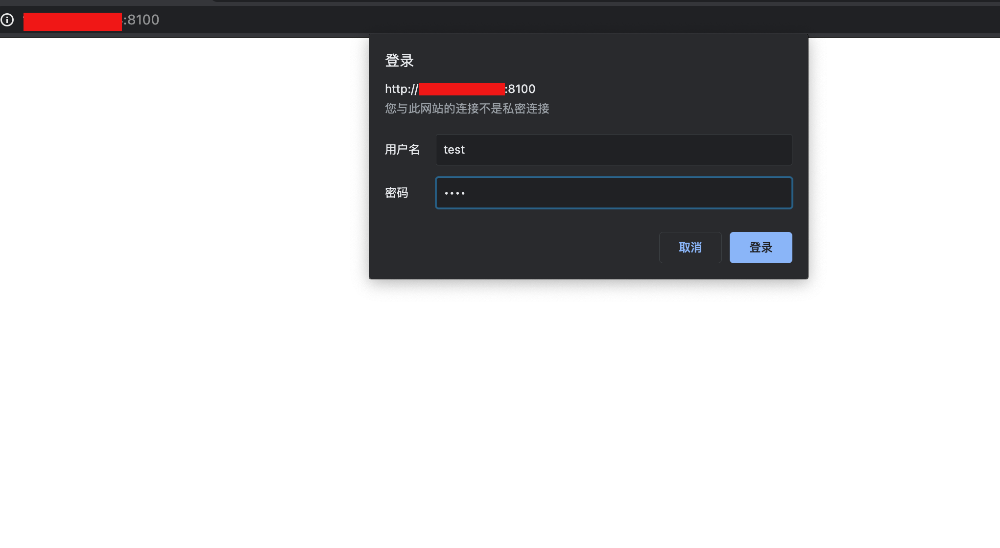

前几天朋友问我如何在没有 root 权限且无法编辑 Nginx 配置的条件下，搭建一个静态文件服务。
我最快想到的是用 Go 写一个程序，直接在目标机器上执行 Go 编译好的二进制文件，应该不会超过 10 行代码。
本着不重复造轮子的想法（另一个主要原因是朋友当时非常着急），尝试找了找前人造好的轮子，于是找到了这个项目：https://github.com/philippgille/serve。
看了一下介绍，和我的想法相同，同时提供了便于扩展的参数，而且提供了各个平台编译好的可执行文件。
安装
Windowns 安装
1 | scoop install serve |
Mac 安装
1 | brew install philippgille/tap/serve |
Linux 安装
1 | wget https://download.jpanj.com/serve_v0.3.2_Linux_x64.zip |
运行
检查 serve 版本
1 | $ serve -v |
服务监听 8100 端口并将当前目录作为静态文件根目录
1 | $ serve -p 8100 |
-d 指定文件根目录
1 | $ serve -p 8100 -d "/opt" |
-a 启用 Basic 认证
1 | $ serve -p 8100 -d "/opt" -a "test:test" |

-s 生成一个自签名证书（7天有效期），开启 https 协议
1 | $ serve -p 8100 -d "/opt" -a "test:test" -s |
-b 指定监听的网络接口，默认为 0.0.0.0
1 | $ serve -p 8100 -d "/opt" -a "test:test" -b "0.0.0.0" |
-h 查看帮助文档
1 | $ serve -h |